SMK terkenal dengan tujuan utama yaitu bisa langsung berkerjasetelah lulus dan memiliki keahlian khusus
selain memiliki bekal jurusan SMK juga membantu kamu untuk memiliki bekal di bidang kewirausahaan.
kamu akan mendapatkan mata pelajaran kewirausahaan sekaligus praktek.hal tersebut akan
membantu kamu untuk membantu kamu untuk mendapatkan pengalaman dalam hal berwirausaha.

 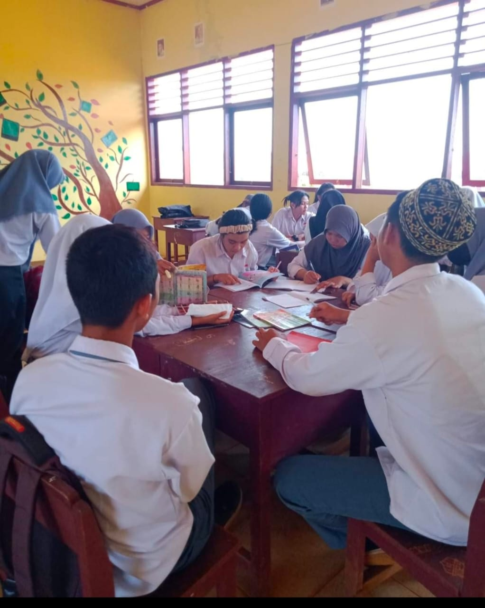
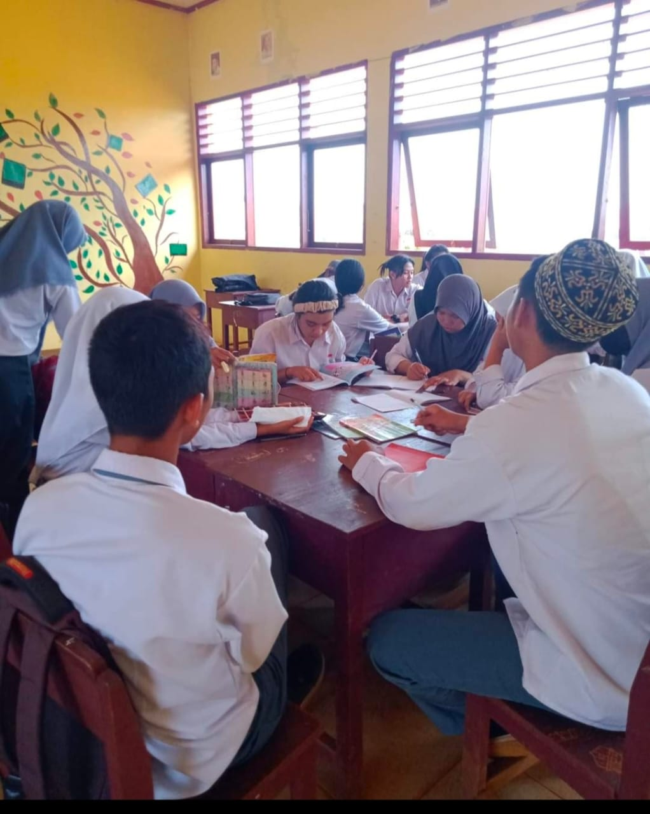
 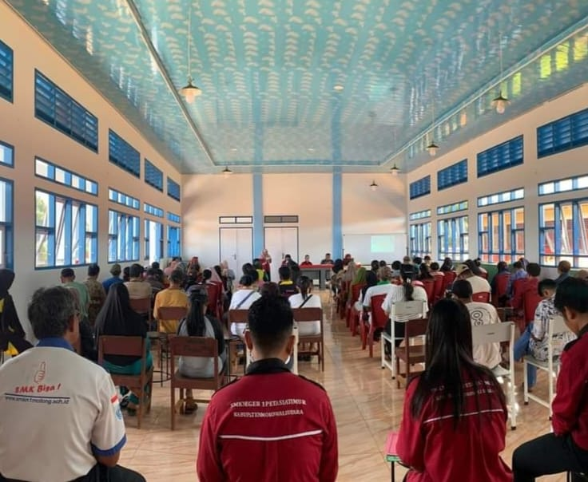
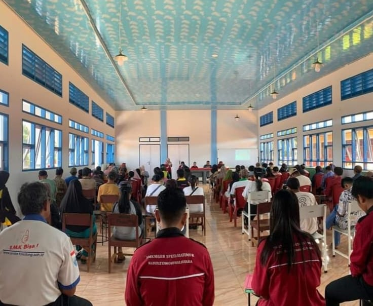


 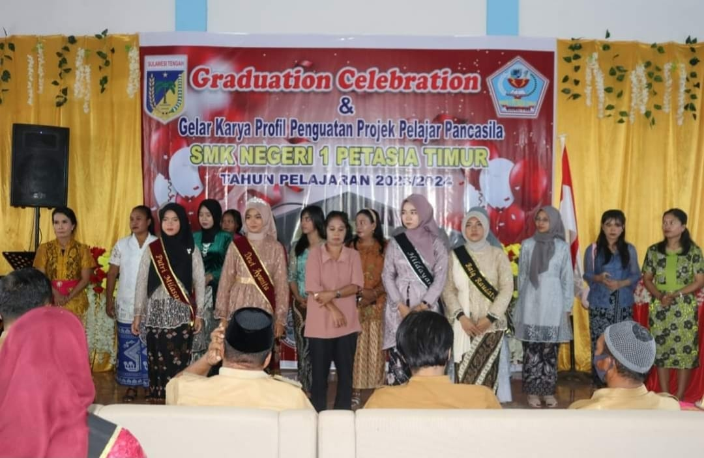
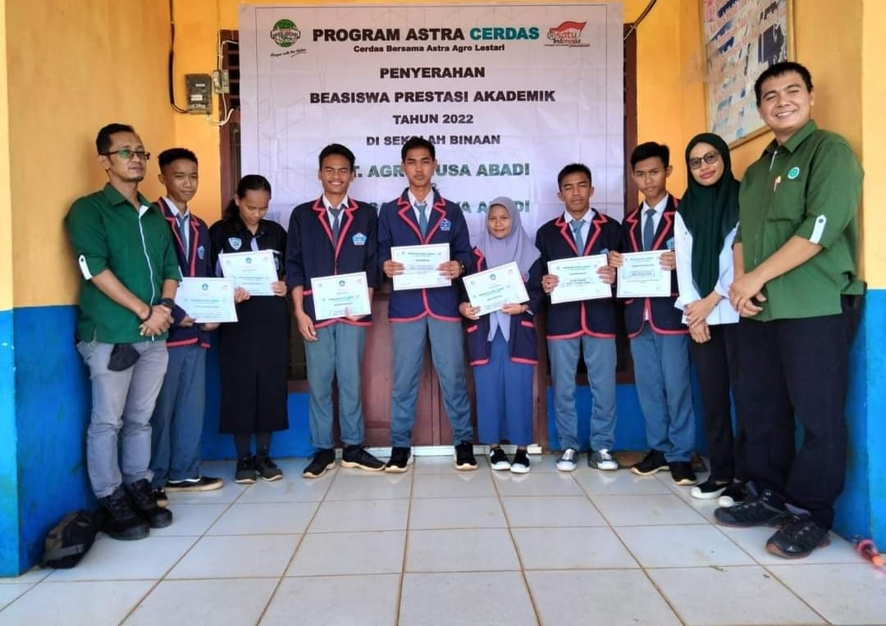
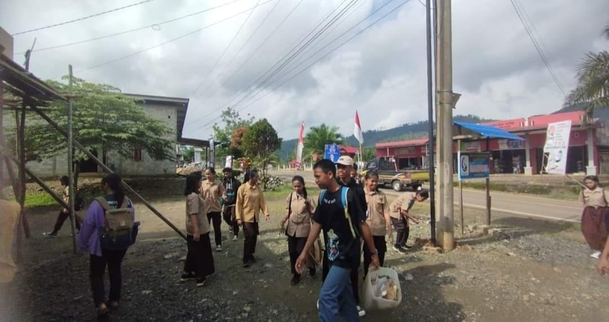
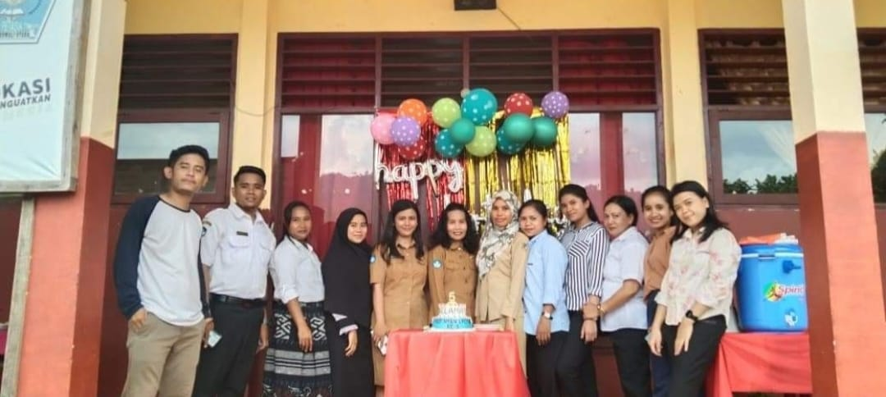
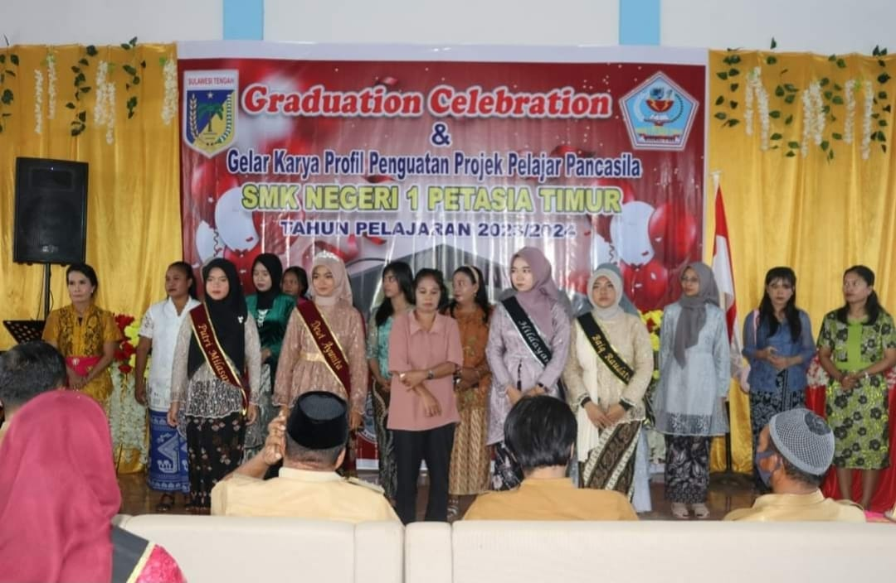
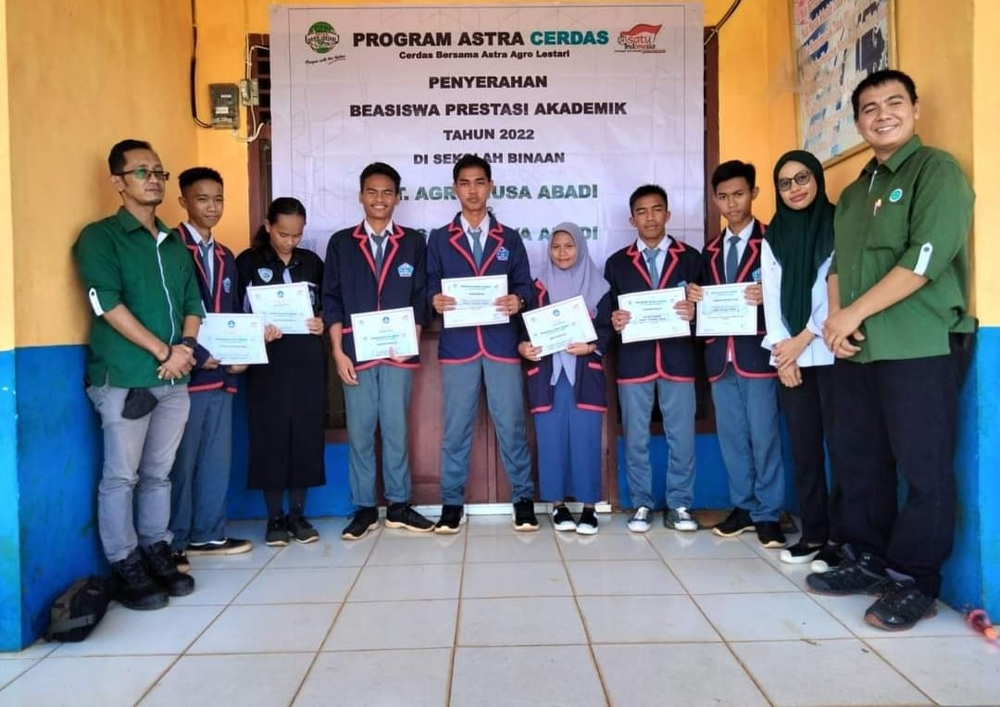
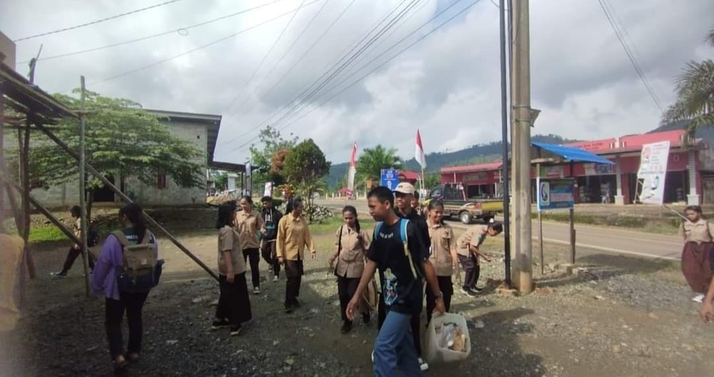
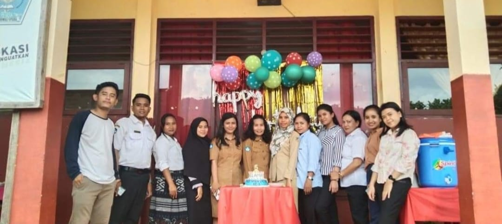